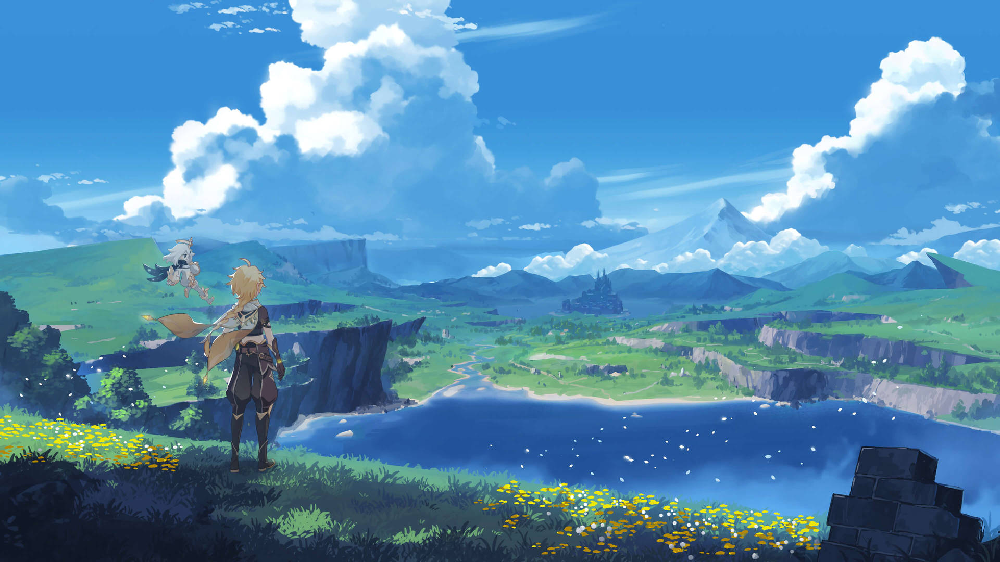
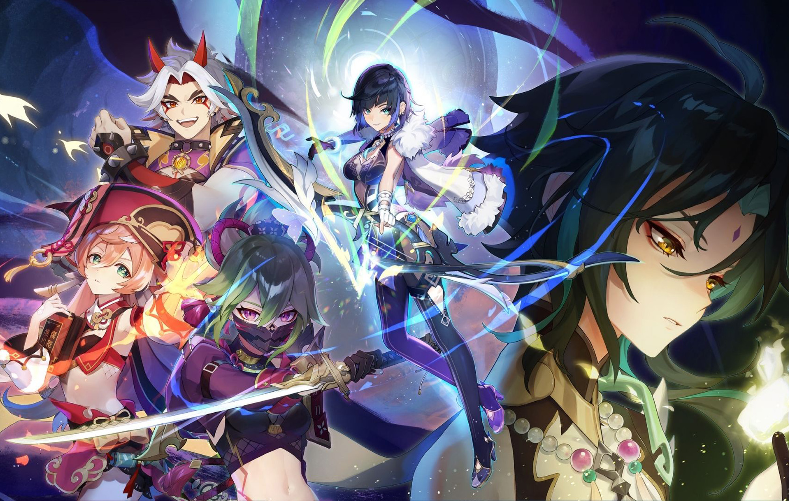
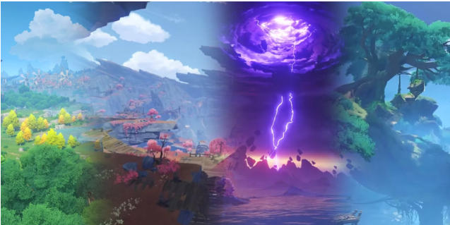
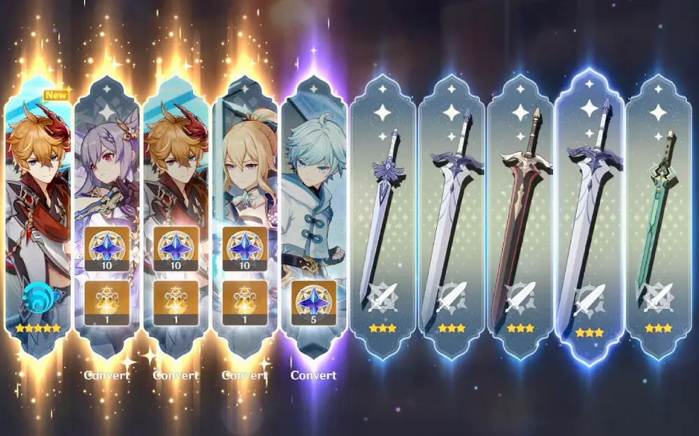

Why You Should Start Playing Genshin Impact
English 12 Assignment by Jasmeen Sandhu (Beyoncè Beyoncè)
- If you don’t live under a rock, you’ve probably heard of Genshin Impact. An award winning, open-world, RPG, gacha game which was released in 2020. I can’t stop talking about how amazing this game is. Many things make Genshin enjoyable, but it would be impossible to write about all of them. So, I condensed it down to a list of the top 6 reasons you should play Genshin Impact.
- Easy to Access
- Game Play & Exploration 
- Stories 
- Characters
- Diversity & Representation 
- Thrill of Gacha 
- There is no doubt that Genshin Impact is an enjoyable game that is accessible to a wide audience. It can be played at any age and you will still be able to enjoy all of the content. A variety of cultures are woven into the characters and the game in a well-developed way with immersing stories. It is definitely one of the best games to come out in the 21st century.

Unlike most high-quality RPG, open-world, adventure games that can only be purchased, Genshin is entirely free! It is easily accessible and can be downloaded on many common devices such as IOS, android, Playstation, and PC. Not only is it free to download, but you also don’t have to pay to win. Most free games often require some sort of payment to be able to enjoy the game to its full capacity, but not Genshin. All components of the game are available through gameplay so the more you play, the more you get. The quality of the game makes it seem impossible to be free, so you feel as though you're playing a game worth a lot. For students like me or those who cannot financially invest in games, but still want a way to relax and be immersed in a different world, Genshin does it all.
Genshin is an open-world game, so you get to control your character and go nearly anywhere. Exploring the new world is thrilling, it's as if you were traveling a a mystical world with your favorite characters. As you navigate through the beautiful landscapes, you'll encounter puzzles and chests. These puzzles will get you thinking and test your problem-solving skills. Some of these puzzles are definitely challenging and may make you feel a bit stupid, speaking from personal experience. In addition to puzzles, you must fight enemies to level up. To make your characters stronger, you’ll have to think about which weapons and talents would be best for them. The challenges of figuring out puzzles and building your characters to fight powerful bosses with well-planned out strategies make the game extremely enjoyable.
The storylines in Genshin are absolutely amazing. It’s like reading a new book each time a new quest comes out. When starting a story quest you won’t know if you're in for a happy and joyous event, a mysterious case that needs to be solved, or a tragic tale. As you learn more about the world, the main story will pique your interest as things aren’t as they seem. Don’t be fooled by the cute demeanor of this game. The stories in Genshin cover a wide array of topics to which many can relate to. If you end up crying during a quest, don't be surprised; we’ve all been there. They also cover heavy topics such as power abuse, genocide, and loss of loved ones. Although many consider the game to be for children due to its looks, the harsh stories share many resemblances to the real world and can get you truly thinking. If you love good stories this game is definitely for you. In each patch, more quests are revealed along with limited events which hold their own deep-rooted story.

If you're a weeb like me, I don't think you need to be convinced about how attractive the characters are. But, the amazing character designs are one of the most appealing aspects of Genshin Impact. In fact, the character designs are what drew me into the game. The art of each character is so detailed and cool it's hard not to fall in love or be hopelessly obsessed with them. The characters come in all shapes and sizes with unique looks so you can find one tailored to your tastes. Whether that's pretty boys, cute girls, tall guys, or ladies you’d let step on you. Besides their appealing design, each character has an engaging backstory. The character lore makes you feel more immersed and attached to them.
Each region in the Genshin world is based on countries around the world. For example, the region of Mondstadt is referenced from Germany while the region of Sumeru is based on South Asia. The diversity also applies to the characters and their designs. You can find aspects of different cultures around the world in the game. Genshin's developers drew inspiration from the country's music, food, architecture and clothing. Representation of so many countries in one game is hard to come by but is super important, especially for underrepresented groups. I am a person of color and until now have never played a game where my culture and heritage are represented. When the new regions were released and I saw names, music, food, clothing along with so much more from my culture I couldn't help but be super excited about it. Additionally, it's like taking a mini-trip around the world as you see different forms of culture.
Genshin Impact is a gacha game that is similar to a toy vending machine in which you don't know what you will get. The thrill and anxiety of seeing if you will get the character you wanted or not is what makes the game so addicting. WARNING: you may or may not develop a gambling addiction by playing this game, but that's just part of the fun. As I said in the beginning, you don’t need to spend money to be able to fully enjoy the game, but if you really want a character the only way is to pull on limited character event banners. While it doesn't sound too bad, you only get five-star characters every 90 pulls, with the chance to get a permanent banner character instead. The temptation of getting the character you want can cause some people to spend money.